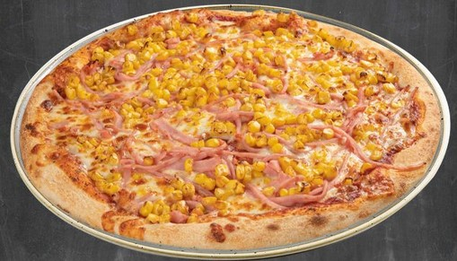
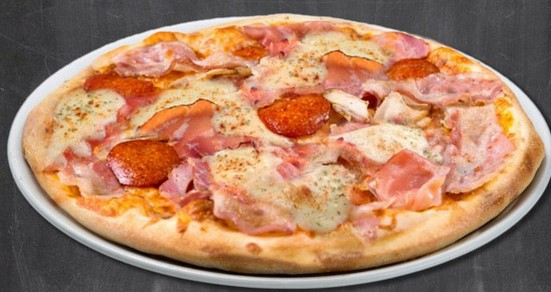
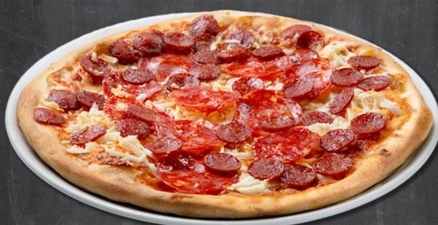
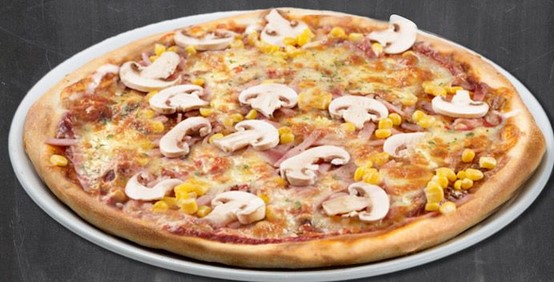
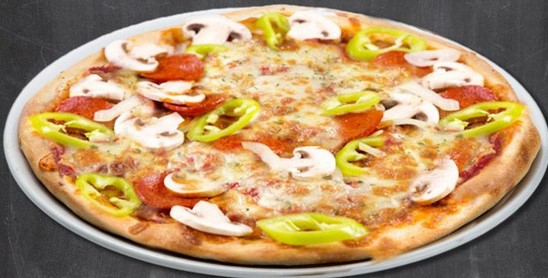
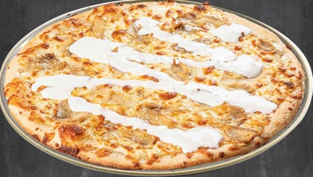

Sonkás, kukorica
1 990 Ft
pizzaparadicsom, mozzarella, sonka, kukorica

Hús hússal
3 390 Ft
pizzaparadicsom, mozzarella, tarja, vastagkolbász

Két kolbászos-két sajtos
3 290 Ft
pizzaparadicsom, füstölt mozzarella, natúr mozzarella, dupla kolbász

SonGoKu
1 990 Ft
pizzaparadicsom, mozzarella, gomba, kukorica

Magyaros (csípős)
1 990 Ft
pizzaparadicsom, mozzarella, szalámi, erős paprika

Fokhagymás, tejfölös csirkés
3 090 Ft
fokhagyma, tejföl, mozzarella, csirkehús